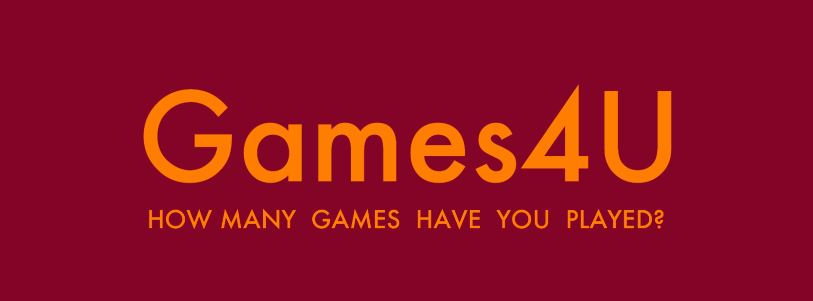

<div *ngIf="userOfGameList" class="header">
    <div class="header-menu other">
        <div class="btn-menu" style="color: {{userOfGameList.myGameListConfig.textColor}};">
            <div *ngIf="listOfLoggedUser == false">Viewing <b>{{userOfGameList.username}}'s</b> gamelist</div>
            <div *ngIf="listOfLoggedUser">Viewing <b>Your</b> Game List</div>
            <a *ngIf="listOfLoggedUser" class="nav-link dropdown-toggle" href="#" id="navbarDropdown" role="button" data-bs-toggle="dropdown" aria-expanded="false">
                Edit
            </a>
            <ul class="dropdown-menu dropdown-menu-lg-end" aria-labelledby="navbarDropdown" style="margin-right: 6%;">
                <li (click)="openPopup()"><a class="dropdown-item">Change color scheme</a></li>
            </ul>
        </div>
        <a 
            href="/" 
            class="header-title"
            [ngStyle]="{'color': userOfGameList.myGameListConfig.textColor}" 
            style="
            font-family: 'futura-medium', sans-serif; 
            font-size: 23pt;">
            Games4U
        </a>
    </div>
</div>
<div
   *ngIf="userOfGameList"
   style="position: relative;
   background-color: {{userOfGameList.myGameListConfig.backgroundColor}};
   border: {{userOfGameList.myGameListConfig.textColor}} 1px solid;
   width: 1058px;
   margin-bottom: 0;
   margin-right: auto;
   margin-left: auto;
   text-align: left;">

   <div class="cover-block">
    <div class="image-container">
        
    </div>
   </div>
   <div class="status-menu-container" style="background-color: {{userOfGameList.myGameListConfig.backgroundColor}};">
    <div class="status-menu" *ngFor="let action of actions" style="display: inline;" (click)="itemSelected(action)">
        <a 
        [routerLink]="[action.routeParam]"
        [ngClass]="action == selectedAction ? 'on' : 'lol'"
        class="status-button" 
        style="color: {{userOfGameList.myGameListConfig.textColor}};">{{action.name}}</a>
    </div>
   </div>
   <div style="padding-top: 8px"></div>
   <router-outlet></router-outlet>
</div>

<div
*ngIf="userOfGameList"
class="modal"
tabindex="-1"
role="dialog"
[ngStyle]="{'display':displayStyle}"
style="backdrop-filter: blur(5px);">
<div class="modal-dialog" role="document">
    <div class="modal-content" style="margin-top: 20%;">
    <div class="modal-header">
        <h4 class="modal-title">Change color scheme</h4>
    </div>
    <div class="modal-body">
        <label for="primary">Primary color:</label>
        <input id="primary" [style.background]="userOfGameList.myGameListConfig.backgroundColor" [(colorPicker)]="userOfGameList.myGameListConfig.backgroundColor" (colorPickerOpen)="alterPrimaryColor('colorPickerOpen', $event)" (colorPickerClose)="alterPrimaryColor('colorPickerClose', $event)" (cpInputChange)="alterPrimaryColor('cpInputChange', $event)" (cpSliderDragStart)="alterPrimaryColor('cpSliderDragStart', $event)" (cpSliderDragEnd)="alterPrimaryColor('cpSliderDragEnd', $event)"
        style="margin-left: 27px;"/>
        <br>
        <br>
        <label for="secondary">Secondary color:</label>
        <input id="secondary" [style.background]="userOfGameList.myGameListConfig.textColor" [(colorPicker)]="userOfGameList.myGameListConfig.textColor" (colorPickerOpen)="alterSecondaryColor('colorPickerOpen', $event)" (colorPickerClose)="alterSecondaryColor('colorPickerClose', $event)" (cpInputChange)="alterSecondaryColor('cpInputChange', $event)" (cpSliderDragStart)="alterSecondaryColor('cpSliderDragStart', $event)" (cpSliderDragEnd)="alterSecondaryColor('cpSliderDragEnd', $event)" style="margin-left: 5px;"/>
    </div>
    <div class="modal-footer">
        <button type="button" class="btn btn-danger" 
                (click)="closePopup()">
        Cancel
        </button>
        <button
            type="button" class="btn btn-success" (click)="updateListTheme()">
        Update
        </button>
    </div>
    </div>
</div>
</div>
